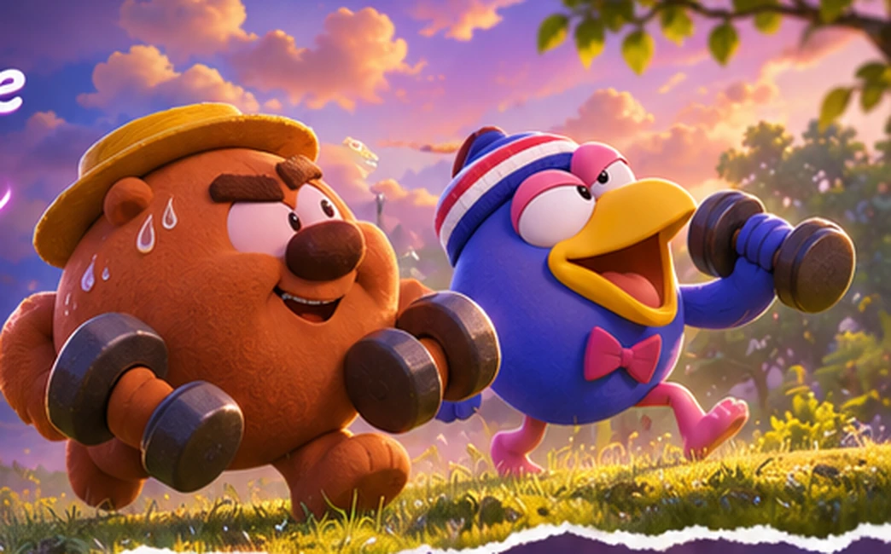
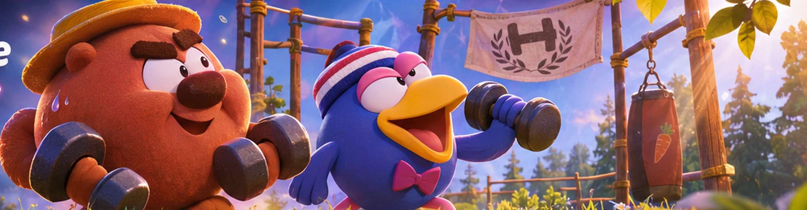
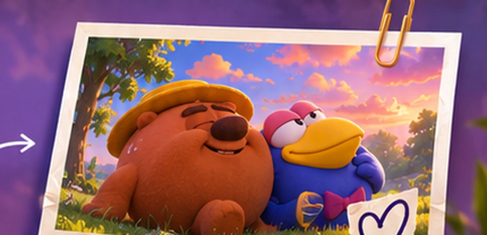
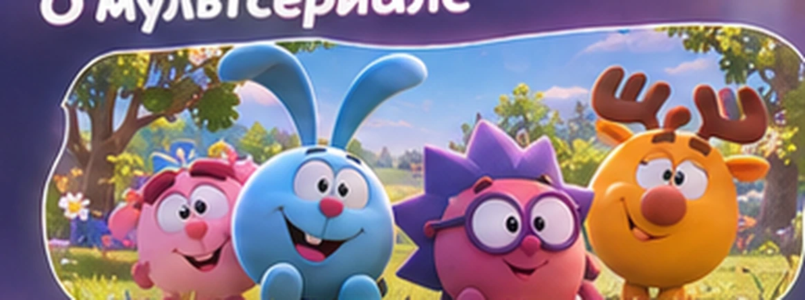

01

НАСТОЙЧИВОСТЬ
КОПАТЫЧ
Любит порядок, практичность и дело. Учит нас терпению: хорошие привычки растут постепенно, как урожай.
«Главное — не бросать начатое!»Когда Копатыч и Кар-Карыч берутся за спорт, обычная тренировка превращается в историю о характере, дружбе и умении не сдаваться.

ПОЕХАЛИ! ✨+100 к настроению
Из альбома приключений ♡В центре этой истории — два очень разных друга. Копатыч любит основательный подход, а Кар-Карыч умеет превратить любое дело в настоящее представление.
Спорт становится поводом поговорить о чём-то большем: почему мы начинаем, как справляемся с трудностями и что на самом деле делает нас сильнее.
Они такие разные — и именно поэтому вместе интереснее.

Любит порядок, практичность и дело. Учит нас терпению: хорошие привычки растут постепенно, как урожай.
«Главное — не бросать начатое!»Энергичный, артистичный и неунывающий. Напоминает: даже серьёзное дело можно делать с улыбкой.
«А что, если попробовать ещё раз?»За шутками и тренировками скрываются идеи, которые пригодятся каждому.
Двигаться, отдыхать и слышать себя — важнее, чем гнаться за чужими результатами.
Необязательно быть чемпионом с первого дня. Регулярность важнее идеального старта.
Рядом с тем, кто верит в тебя, даже самая непростая задача становится легче.
Смех, игра и отдых тоже нужны. Сильный человек умеет вовремя остановиться.
Четыре состояния, знакомые каждому, кто хоть раз решал изменить привычки.
Всё начинается с желания попробовать.
Сложнее всего — просто начать.
Не всё получается сразу. И это нормально.
Удовольствие от пути — уже победа.
Посмотри серию «Притяжение Земли», а затем возвращайся: ниже тебя ждут мини-игра и блокнот для впечатлений.
▶ Открыть видео на Яндексе ↗
Какую мысль из истории ты возьмёшь с собой? Выбери ответ — и получи маленькое послание.
Встань, потянись и разомни плечи. Маленькая пауза — уже движение!
Оставь свою мысль — она появится на этой странице в виде маленькой записки.
Пусть каждый новый день будет поводом сделать маленький шаг к себе.
Вернуться в начало ↑